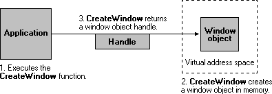
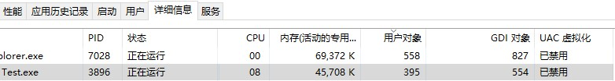

一、用户对象、句柄
User interface objects support only one handle per object. Processes cannot inherit or duplicate handles to user objects. Processes in one session cannot reference a user handle in another session.
There is a theoretical limit of 65,536 user handles per session. However, the maximum number of user handles that can be opened per session is usually lower, since it is affected by available memory. There is also a default per-process limit of user handles. To change this limit, set the following registry value:
1 | HKEY_LOCAL_MACHINE\SOFTWARE\Microsoft\Windows NT\CurrentVersion\Windows\USERProcessHandleQuota |
This value can be set to a number between 200 and 18,000.
理论上每个会话句柄上限为65536，实际上由于内存有限每个回话可以使用的句柄数很少。每个进程可使用的句柄数量当然也有限制，可以通过修改注册表改变限制值（200~18000）。
Handles to User Objects
Handles to user objects are public to all processes. That is, any process can use the user object handle, provided that the process has security access to the object.
In the following illustration, an application creates a window object. The CreateWindow function creates the window object and returns an object handle.

After the window object has been created, the application can use the window handle to display or change the window. The handle remains valid until the window object is destroyed.
在调用CreateWindow创建窗口对象操作系统将返回对象句柄，句柄从此时开始生效直到窗口对象销毁。
In the next illustration, the application destroys the window object. The DestroyWindow function removes the window object from memory, which invalidates the window handle.

可以调用DestroyWindow 销毁窗口并使窗口句柄无效。
二、通过注册表修改用户对象数量限制
1 | //========一个demo，演示查询注册表键值，和设置 |
三、用任务管理器查看程序的User Object、Gdi Object
打开任务管理器，在详细信息右击点击选择列，勾选用户对象、gdi对象。

曾经碰到一次程序异常就是由于这个注册表限制引起的，动态生成的程序窗口，一样的代码，一样的使用方式，达到数量后就会在窗口初始化时报错，抛出异常。后来发现就是这个问题，这个注册表键默认值是10000，当某个进程的user Object数量要超过时后面的界面就没法生成了，因为没有句柄资源可用了。当时一直在窗口初始化那查找原因，报错也是首先在objcore.cpp这个函数，报空指针。